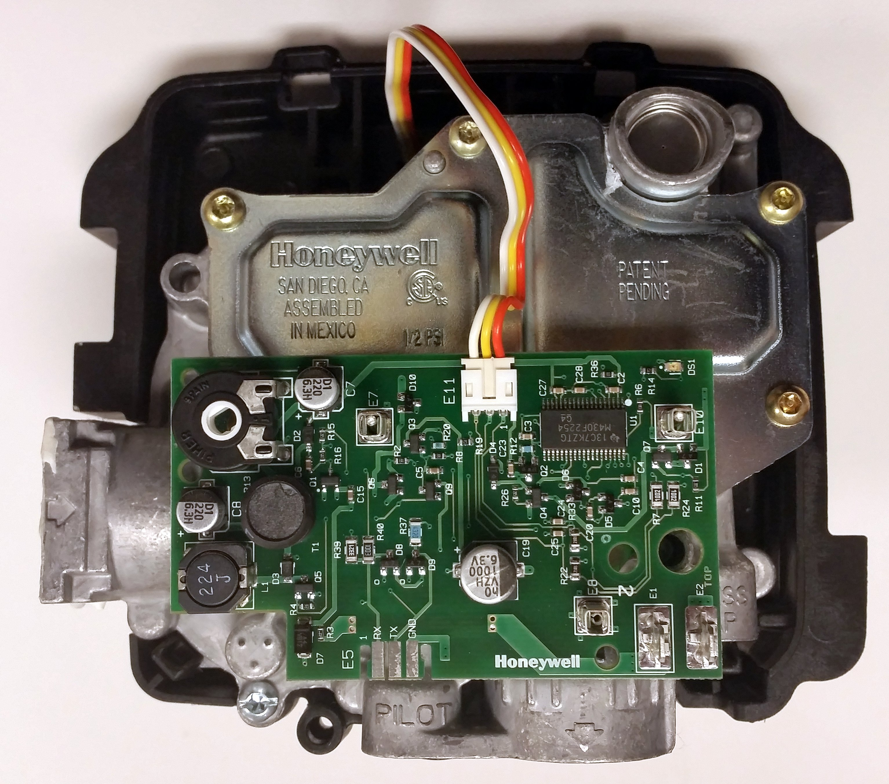
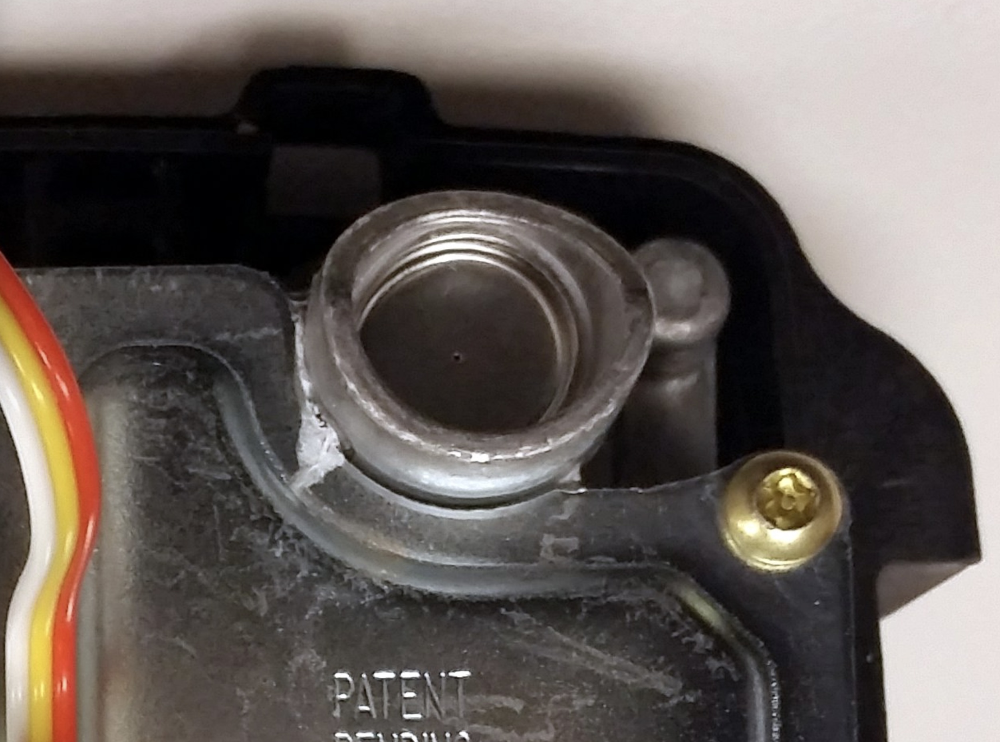

This is a "honeywell" type gas control valve, as are common on nearly all modern atmospheric vent residential water heaters.

The circular part on the top right is not often described in the manual or other resources but is supposedly a gas regulator.
At the center of the disk is a tiny hole, and this would be the breather hole for the atmospheric pressure side of the regulator membrane.
Reports online from people troubleshooting gas odors from honeywell type valves find that the breather hole will emit a small and steady bubble when soap tested. And some of them have reported that the manufacturer support representatives acknowledge this and state that it is normal for the gas valve to leak a very small amount of gas from here and that the leakage rate is still within industry gas valve performance standards.
If a large residential propane tank is drawn all the way down to nearly empty it will pick up a higher concentration of mercaptan that had gravitated towards the bottom of the tank when it was more full. The extra mercaptan can make this normally imperceptable leak much more noticeable and cause a gas leak odor near the water heater that intensifies when the burner is operating.
Close up of the breather hole at the center of the disk:
